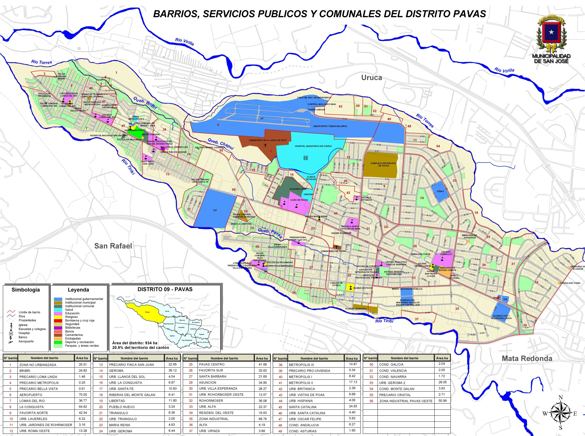
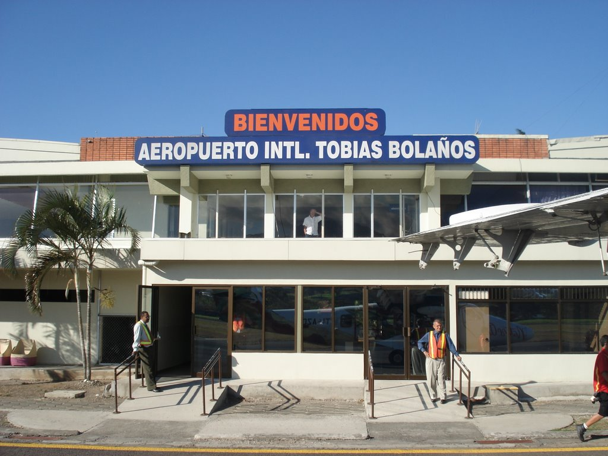
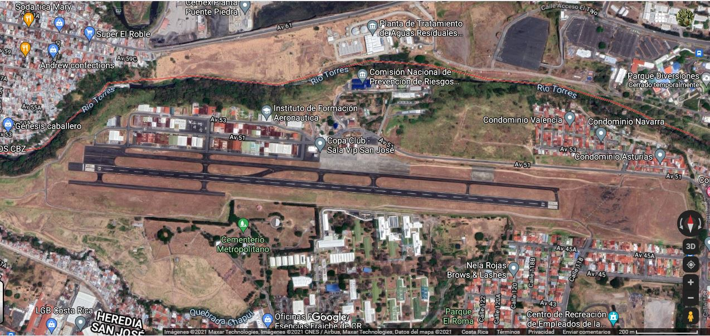

Es el noveno distrito del cantón San José. Según el censo del Instituto Nacional de Estadística y Censos (INEC) del año 2011 la población era de 71.384 habitantes y con alrededor de 19.735 viviendas en un área de 9,34 km², lo cual lo convierte en el distrito más poblado no solo del cantón si no que de Costa Rica.
Según la página Wikipedia el distrito de Pavas colinda con:
El distrito de Uruca se encuentra conformado por los barrios que se enumeran a continuación:
Para conocer la distribución de los barrios, servicios públicos y comunales del distrito puede consultar el siguiente mapa:

Fuente: Municipalidad de San José, 2021.
En el distrito de Pavas se localiza el Aeropuerto Internacional Tobías Bolaños Palma, formando parte de los cuatro aeropuertos internacionales con los que cuenta Costa Rica, se contruyó entre 1954 y 1955 con el fin eliminar el Aeropuerto de La Sabana, ya que este se encontraba muy cerca de algunos edificios.
Según la página Wikipedia "Lleva el nombre del piloto costarricense Tobías Bolaños Palma (1892-1953), primer piloto graduado y quien sentó las bases de la aviación en Costa Rica. Funciona como el aeropuerto principal para vuelos de cabotaje y tiene vuelos internacionales comerciales para Bocas del Toro, Panamá, Managua, Nicaragua, entre otros". El aeropuerto se encuentra ubicado a 8 km noroeste de la ciudad de San José y a 11 km sureste del Aeropuerto Internacional Juan Santamaría en un terreno de aproximadamente 41 hectáreas.
Aeropuerto Internacional Tobías Bolaños Palma:

Fuente: Tomado de Internet, 2021.
Vista aérea del Aeropuerto Internacional Tobías Bolaños Palma:

Fuente: Tomado de Google Maps, 2021.